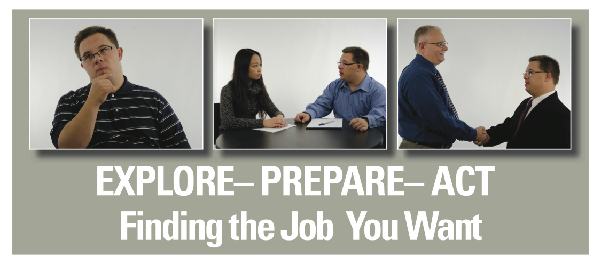

Explore - Prepare - Act
Explore-Prepare-Act was developed in response to concerns raised by self-advocates who were not getting the help they needed to find a job that they wanted. Individuals wanted to better understand the process of finding a job so that they could take action themselves and better access supports that would help them achieve their goals.
Explore-Prepare-Act consists of a video as well as a training curriculum that have been developed by self advocates in partnership with the Institute for Community Inclusion, the Massachusetts Department of Developmental Services and the Massachusetts Advocates Standing Strong.
This three hour curriculum, presented by self-advocates for self advocates, provides an overview of the basic steps involved in finding a job with an emphasis on understanding oneself and the community, development of job seeking skills, and taking steps to find a job. The training, designed for individuals interested in learning more about work, includes presentations, discussion, videos clips and small group activities. Support staff are welcome to attend as well. Currently funded by the Massachusetts Rehabilitation Commission and the Massachusetts Department of Developmental Services, this training is currently offered free of charge throughout Massachusetts.
Watch the Explore.Prepare.Act video

For more information about the training curriculum contact:
Cindy Thomas
Institute for Community Inclusion
University of Massachusetts Boston
cindy.thomas@umb.edu
617-287-4312
To schedule a training session in Massachusetts contact:
Massachusetts Advocates Standing Strong
617-624-7549
This curriculum was developed with support form Work Without Limits, a Massachusetts Disability Employment Initiative funded by the Centers for Medicare and Medicaid Services (CFDA No. 93.768).